Four referendums on 11 October 2026 — do the numbers add up?
No traces of fraud in the data
Same ballots, territorial count — the winner flips
62% of units and 60% of stations said YES to the 'RTV Slovenia fee'
62% of units and 56% of stations said YES to the 'Parliamentary Investigations Act'
What was decided on 11 October 2026
Slovenia voted on four questions at once — one binding referendum on a law and three consultative ones. Every voter received all four ballots. National turnout: 54.6%.
Parliamentary Investigations Act (ZPPre-B)
Social assistance
Local voting rights
RTV Slovenia fee
Same votes, different rules — different results
How much do the rules themselves decide? I swapped the counting rule to see if it matters. Theory calls these voting paradoxes; on this data they are simply measurements.
Count by territory — the winner flips
The RTV-fee question lost nationally by 546 votes. Count the same votes by Slovenia's 8 regions: YES wins 5 : 3. By the 88 election districts: YES 46 : 42. Polling station by polling station: YES 1,857 : 1,198. The rejected investigations law flips the same way at regions and stations.
Count only election day — all four go YES
In the polling stations on 11 October YES won every question — the investigations law by 10,255 votes. Early voting (75,000+ voters, the second largest in Slovenian referendum history) and postal votes went NO on all four. About 9% of ballots, cast before election day, decided both rejections.
Tiny margins, giant swings
547 extra YES votes and the RTV fee is abolished. 23,148 extra YES voters — 3% of abstainers — and the investigations law survives. And 664,854 extra names on the voter roll, without one vote changing, and the constitutional quorum swallows the rejection.
Rule 1 · Territorial majorities instead of the national total
Slovenia adds up the whole country: more votes wins. Much of the world instead counts territories — whoever carries more regions or districts wins overall. Apply that to the same ballots:
| Question | National | 8 units | 88 districts | 3,083 stations |
|---|---|---|---|---|
| Parliamentary Investigations Act (ZPPre-B) | NO 51.26% | YES 5 : 3 ← | NO 48 : 40 | YES 1728 : 1327 ← |
| Social assistance | YES 60.54% | YES 8 : 0 | YES 71 : 17 | YES 2602 : 463 |
| Local voting rights | YES 55.30% | YES 6 : 2 | YES 64 : 24 | YES 2213 : 842 |
| RTV Slovenia fee | NO 50.03% | YES 5 : 3 ← | YES 46 : 42 ← | YES 1857 : 1198 ← |
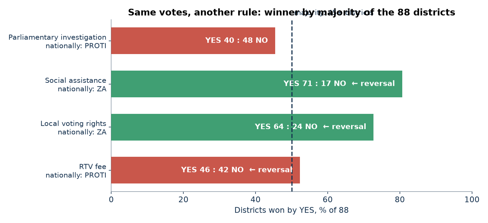
Rule 2 · Only ballots cast on election day
Where a vote is cast should not matter — here it decided everything. Election-day precincts said YES to all four questions (+10,255 to +208,991); early and postal votes said NO to all four. Both rejections were decided by the ~9% of ballots cast outside election day.
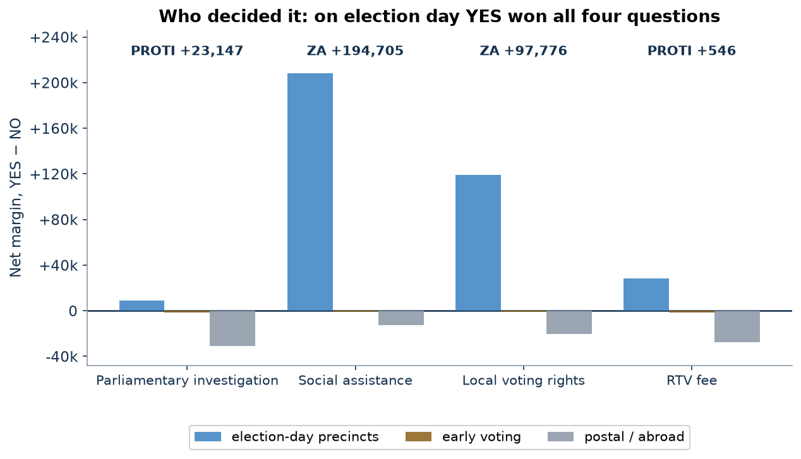
Rule 3 · Winner-take-all districts (the gerrymander test)
Slovenia does not use districts for referendums — so how much would a district map matter? Build 88 equal-size districts from precincts and draw them as favourably as possible for the losing side: where the vote is near parity (RTV fee 51.7%, investigations law 50.5% of election-day votes) the loser reaches 45 districts of 88 — a majority. Against a 60.5% defeat even the best map manages only 17.
Rule 4 · The turnout quorum (Article 90)
For the binding investigations referendum the Constitution sets two locks on rejection: a NO majority, and NO votes from at least 1/5 of all registered voters. NO cleared both — by 132,971 over the quorum. But the quorum counts people who did not vote: with 664,854 more registered voters (+39%), the same 472,444 NO votes would miss 1/5 — the law would stand, without a single ballot changing.
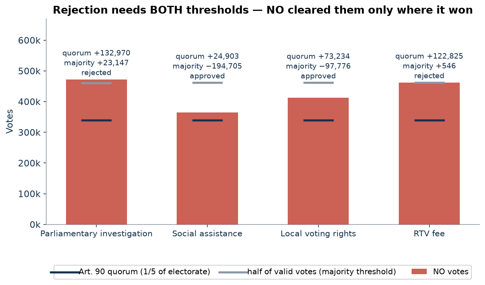
Manipulation detection test results
Eight families of tests used by election statisticians worldwide, run on the official precinct data with open-source code. Summary: all clean.
✓
Anomalous-vote estimate (Shpilkin method)
Votes beyond the honest turnout decline: at most 1% of YES votes and 0.45% of NO votes — and removing them would shift any outcome by at most 0.15 points.
What it checks: stuffed ballot boxes push precincts out to the right of the turnout curve and concentrate extra votes for one side there. The method fits a smooth bell to the turnout distribution, finds where the honest decline ends (the 70.1% line, read off the three other referendums, which share the same precincts and electorate), and counts the votes beyond it. In all four referendums the anomalous zone holds 4,135–4,651 YES votes (0.89–1.00% of each YES total) and 1,297–1,812 NO votes (0.41–0.45%) — the right edge of the same city/countryside gradient, not a separate cluster; deleting it would shift any outcome by at most 0.15 points.
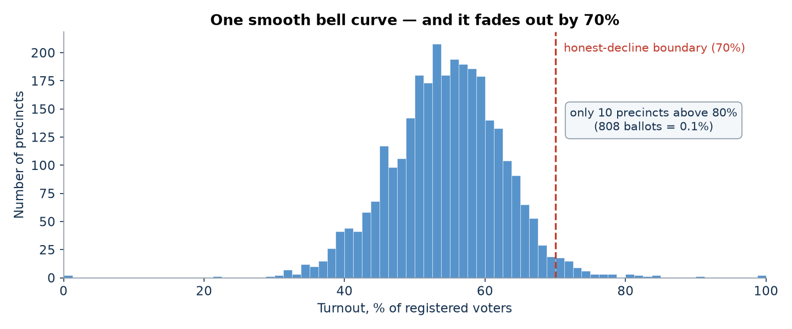
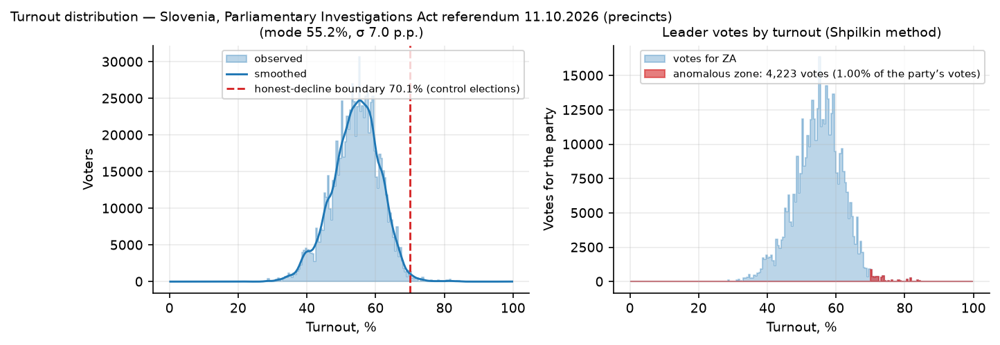
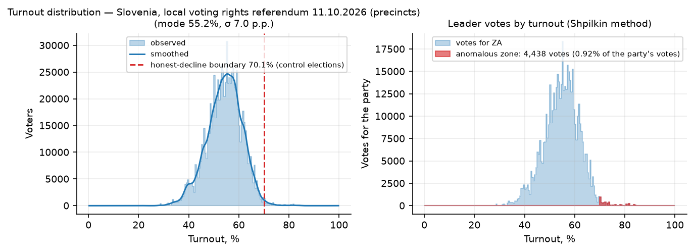
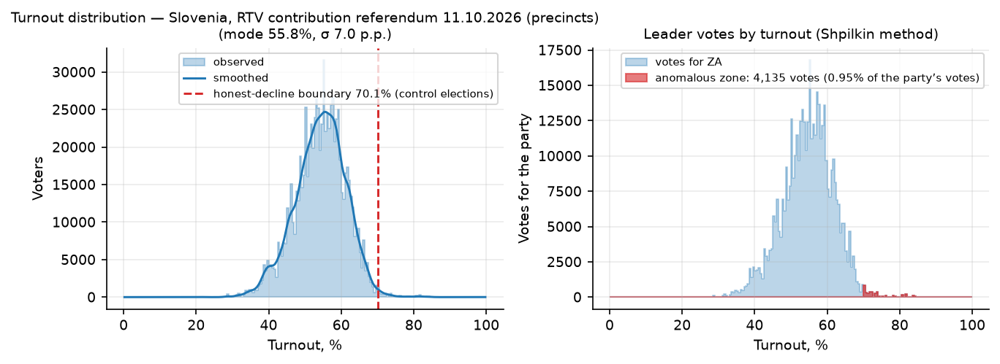
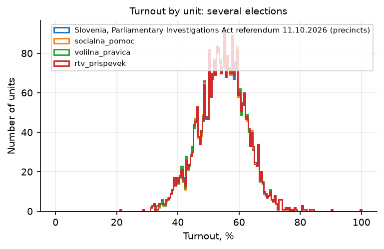
✓
Turnout × result scatter (“comet tail”)
One continuous cloud with a smooth gradient — no separate “tail” of high-turnout, high-YES precincts that ballot-stuffing produces.
What it checks: ballot-stuffing ties high turnout to high result — on falsified data a separate “tail” of 80–100%-turnout precincts stretches toward 80–95% results while the rival’s share collapses in exactly those precincts. Here the cloud is one continuous body: the YES share rises smoothly with turnout (+4 points per 10 points; weighted correlation +0.27…+0.38), with no kink at the right edge. Above 80% turnout sit only 10 tiny precincts — 0.1% of ballots.
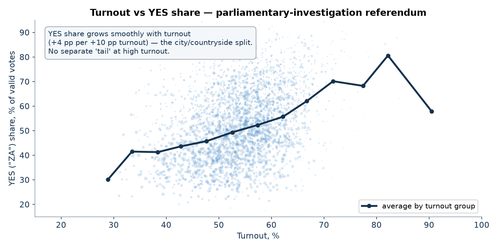
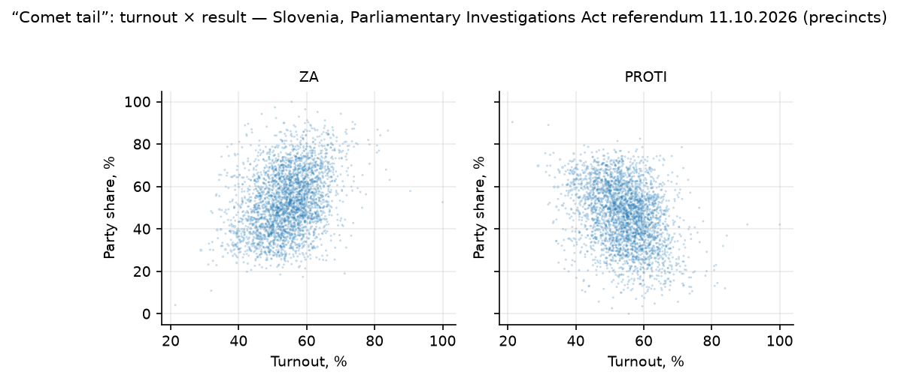
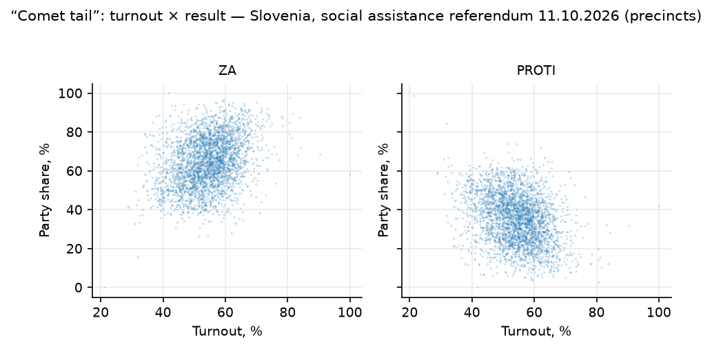
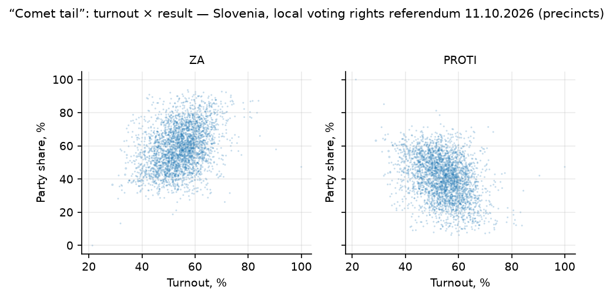
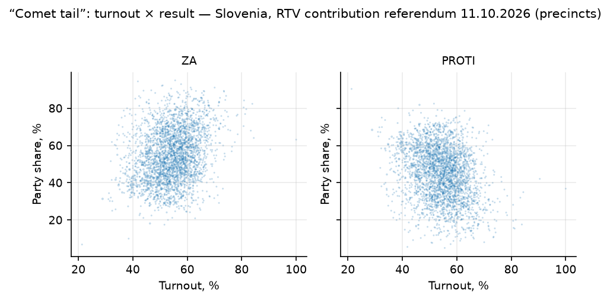
✓
Election fingerprints (Klimek et al.)
The distribution matches honest elections; the specific 2D cluster typical of fraud (80–100% turnout) is absent.
What it checks: Klimek et al. (PNAS 2012) model precincts as a mix of two 2D clusters in the turnout × result plane; in falsified elections the second cluster is compact and sits at 80–100% turnout with high results. The formal criterion fires here as well, but both components lie at mid-range turnout (51–56%) — a gradient inside one continuous cloud, identical in all four referendums (share correlations 0.94–0.96). The classic fraud island at 80–100% turnout does not exist: above 85% only two precincts remain (19 and 21 voters).
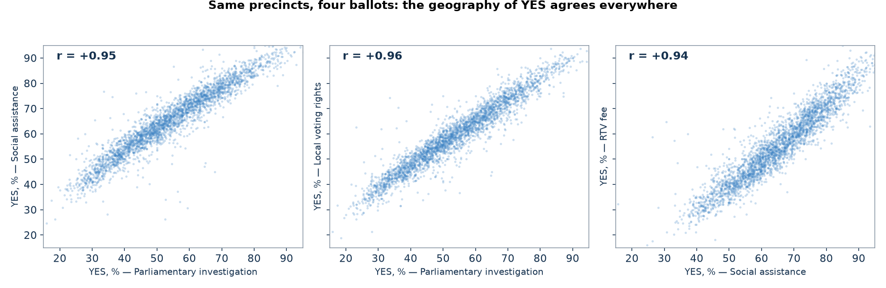
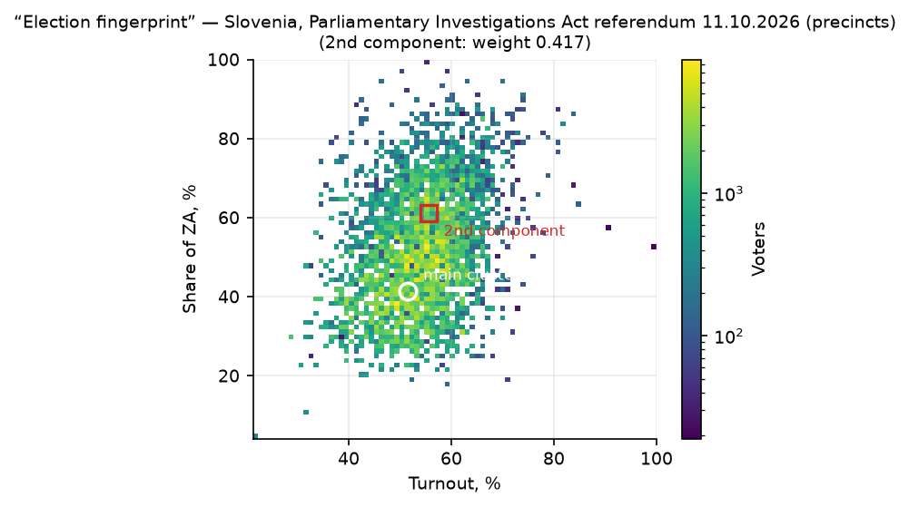
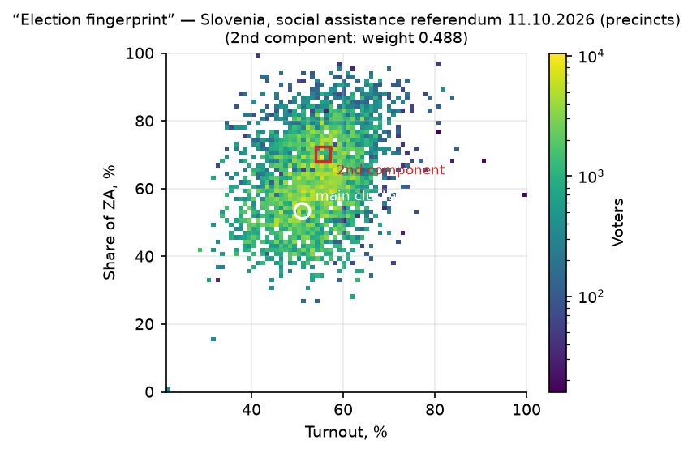
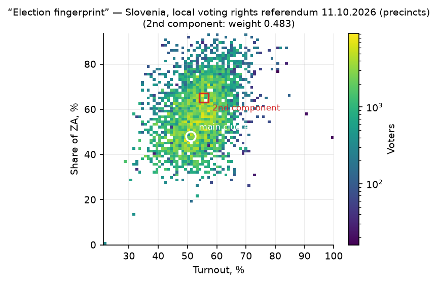
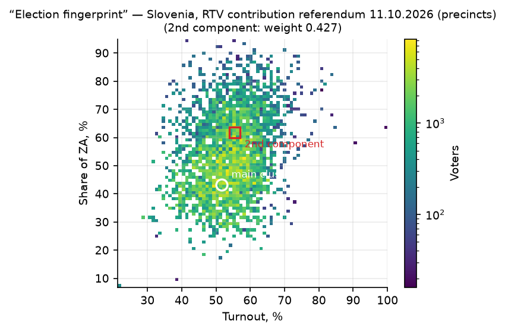
✓
Round-number peaks (Kobak et al.)
Protocol values show no preference for whole percentages of turnout or result (all statistics ≤ 1.3) — no sign of numbers typed in by hand.
What it checks: numbers typed in by hand cluster at round values — a turnout or result ending exactly at a whole percent (or a multiple of 5) should be rare. The test compares the share of precincts with integer values against a Monte Carlo null built from the same data. Every statistic lands within ±1.3 (turnout z −0.0…+0.4; YES share z ≤ +1.1; NO share z ≤ +1.3): no handwriting signature. Honest caveat: with ~460 voters per precinct the test detects only mass falsification — quantified in the self-test below.
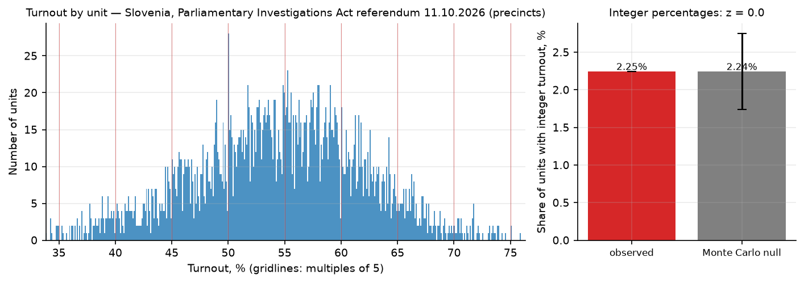
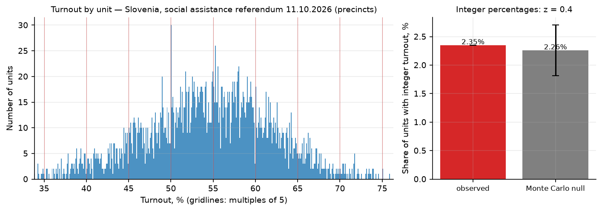
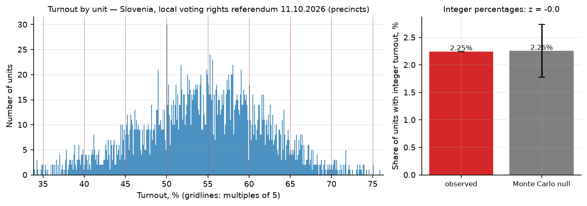
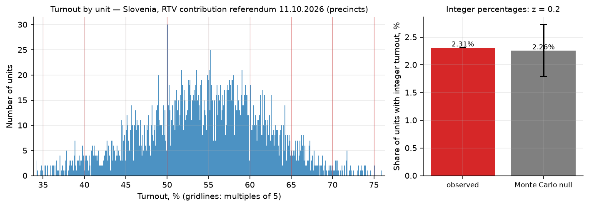
✓
Digit tests (Benford, last digit)
16 tests on vote counts: 13 fully clean, 3 borderline values with the opposite of the “fabricated numbers” profile — and not significant after multiple-testing correction.
What it checks: fabricated numbers leave fingerprints in the digits — an excess of round 0s and 5s (Beber–Scacco last-digit test) and departures from Benford’s law in the second digit. Sixteen tests (two options × two digit tests × four referendums): 13 fully clean. The three borderline values (Monte Carlo p = 0.005–0.12) deviate toward an excess of the digit 4 and a deficit of 0 — the opposite of the round-number profile of invented numbers — and none survives the Bonferroni correction for 16 tests (threshold 0.003).
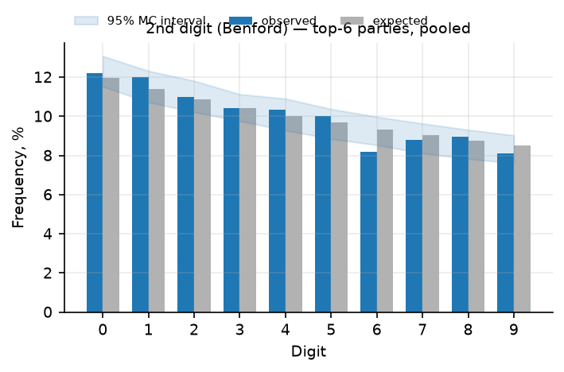
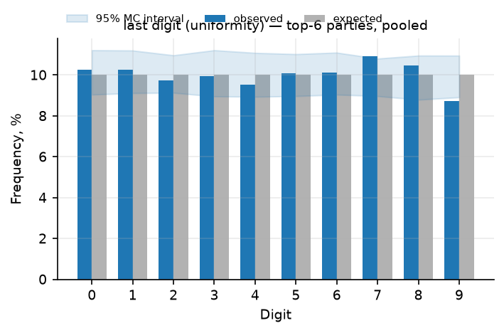
✓
Outliers vs neighbours + machine learning
A few dozen precincts flagged — all tiny (16–342 voters) with mixed directions; a normal statistical tail, not a pattern.
What it checks: two independent screens for odd precincts — each precinct against the median of its district (robust z-scores, threshold |z| > 4), and an Isolation Forest over four features (turnout, leader share, invalid ballots, size). Neighbours flag 22–40 precincts per referendum (0.7–1.3%); machine learning flags exactly 30 (1% by construction). All are tiny places (16–342 voters) with mixed directions — largely the same extremes in all four ballots (e.g. a 19-voter precinct at 100% turnout): a normal statistical tail, not a pattern. Figures show the RTV fee ballot, the most-voted one; the rest are analogous.
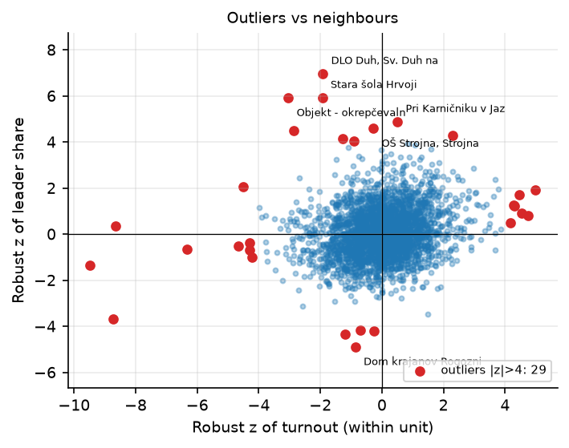
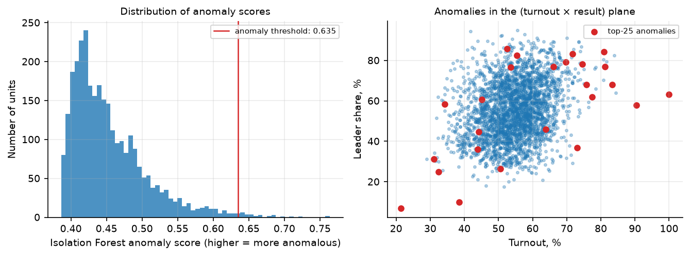
✓
Duplicate protocols
Repeated result vectors occur at exactly the rate chance predicts (38–60 observed vs 37–53 expected). No copy-paste.
What it checks: copied protocols surface as identical result vectors (YES, NO, invalid) repeated across precincts more often than chance allows. Observed: 38–60 repeated vectors per referendum against a bootstrap expectation of 37–53 — natural collisions of similar precincts (37 of the 38 preiskava pairs lie in different districts). A cross-ballot check closes the case: the difference in YES votes between referendums equals 0 twice less often than 1 (412 vs 798 precincts) — a decay to zero, the opposite of a copy-paste spike.
✓
Self-test: the toolkit actually detects fraud
I injected synthetic ballot-stuffing into the data — the estimated anomalous zone grew 12-fold and every alarm fired. The “clean” verdict is a real measurement, not a blind spot.
What it checks: the toolkit itself. A synthetic stuffing is injected into the real data — turnout raised by 5–35 points in 10% of precincts, 60–95% of the added ballots for the leader — and every alarm fires: the Shpilkin anomalous zone grows ×12–13 (4,135–4,651 votes become 51,792–59,247). A second injection (5% of precincts rounded to a whole turnout percent) lifts the integer-peaks z only to 0.8–1.6 — an honest measurement of that test’s power at ~460 voters per precinct, as flagged above.
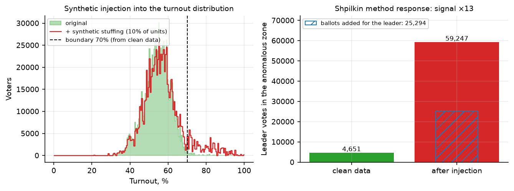
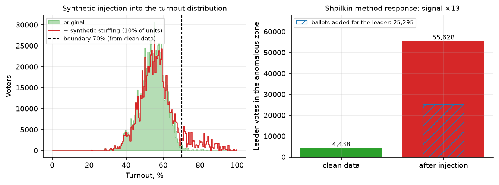
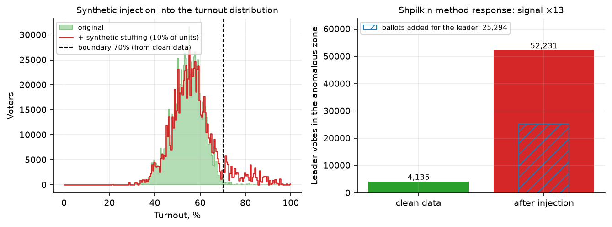
Data & reproducibility
- Source: official machine-readable results of the State Electoral Commission (DVK) at volitve.dvk-rs.si — precinct-level files for all four referendums, downloaded 13 October 2026 (server snapshot 12 October 2026, 99.98% counted).
- Cross-check: my totals match the Wikipedia summary table for all four referendums to the exact vote.